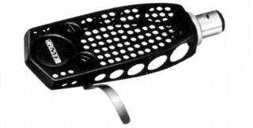
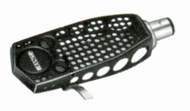
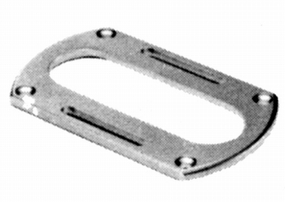
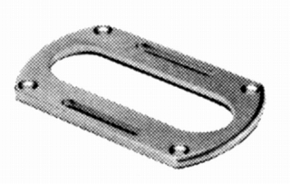

その他の製品
�@ヘッドシェル
S-2

■価格 3,300円
■重量 6.4g
■備考 アルミプレス加工
1970年代の軽量シェルの代表的存在
価格は1975年頃のもの
1979年頃は\3,800
1985年頃は\4,500
S-2R

■価格 8,000円
■重量 8g
■備考 アルミプレス加工
3009-Ｒ/3010-Ｒ/3012-Ｒ向け
3951/309、3951/310、3951/312
（画像なし）
左から309/310/312用シェル。各11,000円
�Aアームベースプレート
LS-200

■価格 6,500円
■備考 Series�U以前のモデルとSeries�VのRモデル向け
3009
Series�VS、3009 Series�Vは適用外
真鍮製。厚さ4�o。
LS-800

■価格 8,000円
■備考 Series�U以前のモデルとSeries�VのRモデル向け
3009
Series�VS、3009 Series�Vは適用外
真鍮製。厚さ8�o。
P-1
（画像なし）
■価格 2,200円
■備考 ターンテーブル上面の高さが、ボード上から
41�o以上ある場合に使うスペーサー。
軽合金ダイキャスト製。厚さ10�o。
SMEのインデックスへ